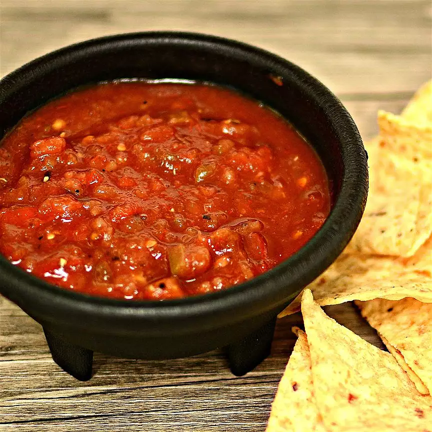

Salsa.

Description
I cannot properly express to you how much I love this salsa. It was a recipe I got a from a friend and began playing around with. It is absolutely delicious with an incredibly well-rounded flavor. Personally, I am a huge fan of spicy food so keep that in mind when looking at these measurements - if you're not big on heat, feel free to decrease the amounts.
Ingredients
- 3 Roma tomatoes, scored across the bottom.
- 4 cloves of garlic, cut in half.
- 1 serrano pepper
- 1 can Fire Roasted Rotel
- 1 can Cilantro Lime Rotel
- 1 lime
- Cilantro (I use 1/2 a large bunch)
- Salt and pepper to taste.
- 2 tsp coriander
- 1.5 tsp chili powder
- 1.5 tsp paprika
- 1 tsp cumin
- A pinch of garlic powder
- A pinch of onion powder
Steps
- Open and drain cans of Rotel, add to food processor.
- Add cut cloves of garlic to food processor.
- Boil small pot of water, when at a rolling boil, add scored tomatoes. Cook for 1 minute or until the skin begin peeling, then immediately add to ice bath.
- While tomatoes are cooling in ice bath, roast serrano pepper on the stove burner until charred. Cut into smaller pieces and add to food processor.
- Peel skin off and quarter tomatoes. Scoop out seeds and add tomatoes to food processor.
- Add coriander, chili powder, paprika, cumin, and salt and pepper, and garlic and onion powder to food processor.
- Pick off as much cilantro as you like - you don't have to be meticulous, it's fine if some stem is in there - and set aside.
- Add lime juice. 1/2 to whole lime, depending on how juicy it is.
- Blend just a bit so the salsa is still fairly chunky, add cilantro, blend a bit more.
- Taste test, see if it needs to be adjusted.
- Add to tupperware and put in the fridge for a bit to allow the flavors to meld.
- Enjoy!